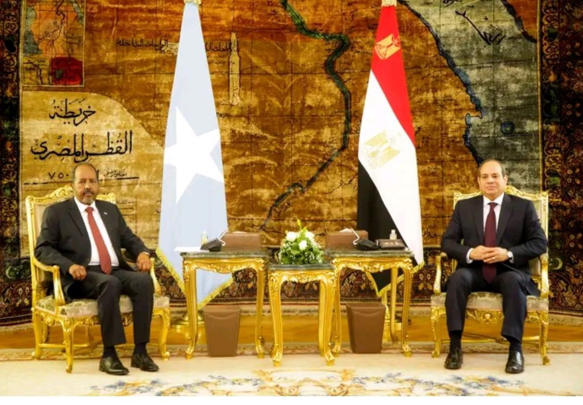

warbixin
warbixiin

Dowladda Soomaaliya ayaa sheegtay in ay dhowaan dalka imaanayaan wefdi ka socda Masar oo uu hoggaaminayo wasiirka dekadaha, islamarkaana ay weheliyaan qaar kamida madaxda shirkadaha waaweyn ee dalkaasi.
Wasiirka Qorshaynta Xukuumadda Federaalka Soomaaliya Mudane Cabdiraxmaan Beena-beene ayaa sheegay in wefdigani ay Soomaaliya kala xaajoon doonaan inay maalgshadaan dekadaha dalka, asagoo sheegay inay dhankooda qorshahaas aad u soo dhaweynayaan.
Arrintan ayaa ku soo beegmaysa xilli Soomaaliya ay xiisad xooggan badda ku saabsani ay kala dhexayso maamulka Abii Axmed ee hoggaanka u haya Itoobiya, islamarkaana Masar ay la safantahay dhinaca Soomaaliya.
warbixin
warbixiin